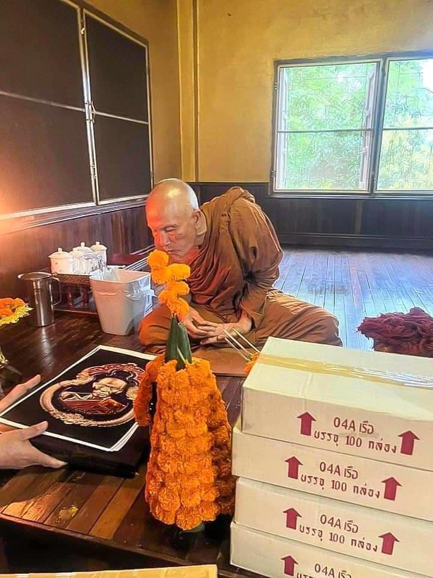
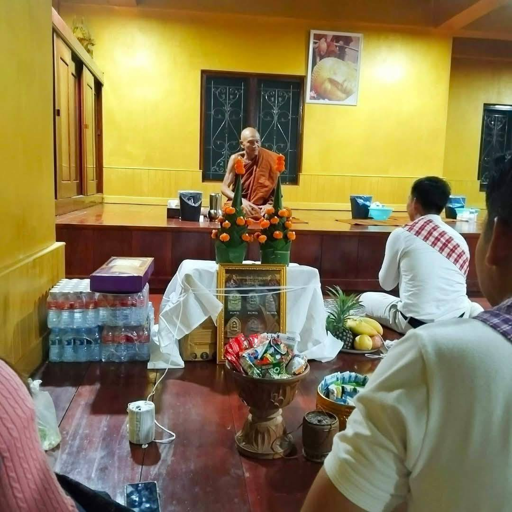
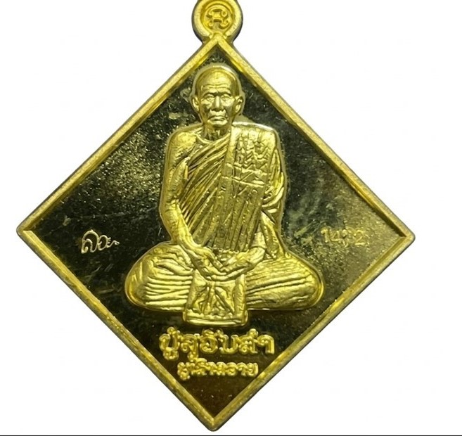
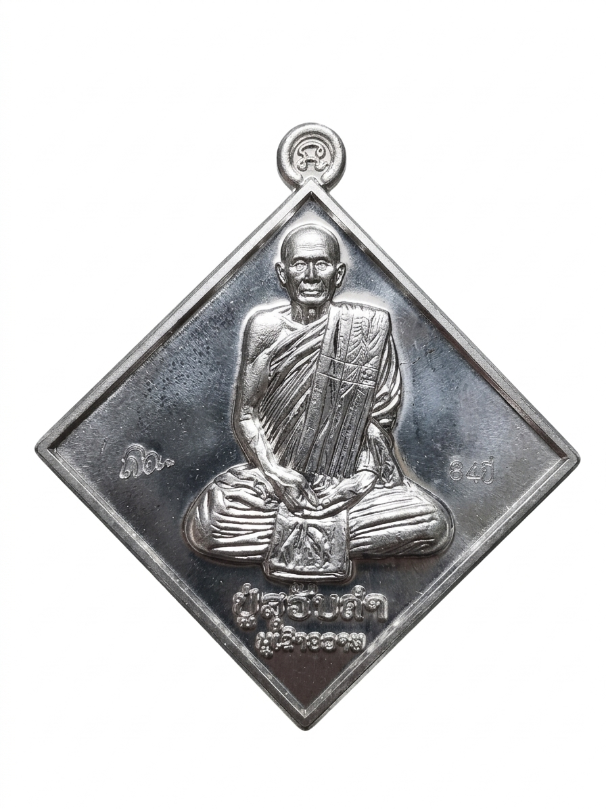

"ພະອະຣິຍະສົງຄ໌ບັງບົດ ຜູ້ມີເມດຕາທຳແຫ່ງ ພູເຂົາຄວາຍ"


ພຣະອະຣິຍະສົງເໜືອກາລະເວລາ
ໃນດິນແດນແຫ່ງສັດທາຂອງສອງຝັ່ງຂອງ, ຊື່ຂອງ ຫຼວງປູ່ສຸວັນຄຳ ຈັນທະສາໂຣ ປາກົດຂຶ້ນພ້ອມກັບເລື່ອງລາວອັນເປັນປິດສະໜາ. ເພິ່ນຖືກກ່າວຂານວ່າເປັນ "ພຣະບັງບົດ" ຜູ້ມີບາລະມີທັມອັນລຶກລັບແຫ່ງພູເຂົາຄວາຍ.
ບໍ່ມີຜູ້ໃດຢືນຢັນໄດ້ຊັດເຈນວ່າເພິ່ນເກີດຢູ່ໃສ ຫຼື ມີອາຍຸເທົ່າໃດ. ຍາດໂຍມທີ່ຂາບໄຫວ້ເພິ່ນມາຫຼາຍສິບປີ ຕ່າງບອກວ່າຮູບລັກຂອງເພິ່ນຍັງຄືເກົ່າບໍ່ປ່ຽນແປງ ເໝືອນຜູ້ບັນລຸວິຊາກາຍສິດ ຢູ່ເໜືອກົດເກນທຳມະຊາດ.
ມີຄວາມເຊື່ອວ່າ ເພິ່ນຄືການແບ່ງກາຍ ຫຼື ເປັນຮ່າງໃໝ່ຂອງ "ຫຼວງປູ່ເທບໂລກອຸດອນ" ທີ່ກັບມາເພື່ອສືບທອດພຸດທະສາດສະໜາໃຫ້ຄົບ 5,000 ປີ ດ້ວຍພະລັງຈິດທີ່ກ້າແກ່ນ ແລະ ວິຖີການບຳເພັນທີ່ລຶກລັບ.
ເພິ່ນມັກຈຳພັນສາແບບສະງົບວິເວກຕາມຖ້ຳ ແລະ ປ່າເລິກ. ວັດຖຸມົງຄຸນທີ່ເພິ່ນອະທິຖານຈິດໃຫ້ ຖືເປັນຂອງມີຄ່າຫາຍາກ ເພາະເຕັມໄປດ້ວຍພະລັງປ້ອງກັນໄພ ແລະ ເສີມໂຊກລາບສົມປາຖະໜາ.
"ພະແທ້ ຈາກບາລະມີຫຼວງປູ່ ສົມປາຖະໜາ"

